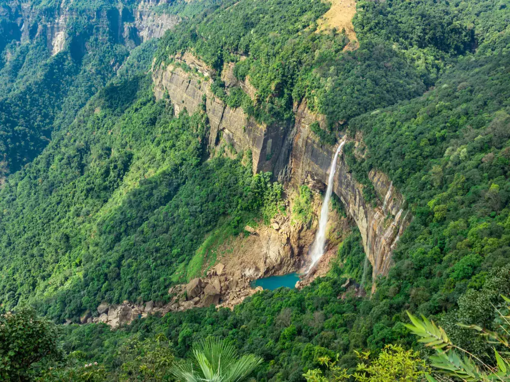
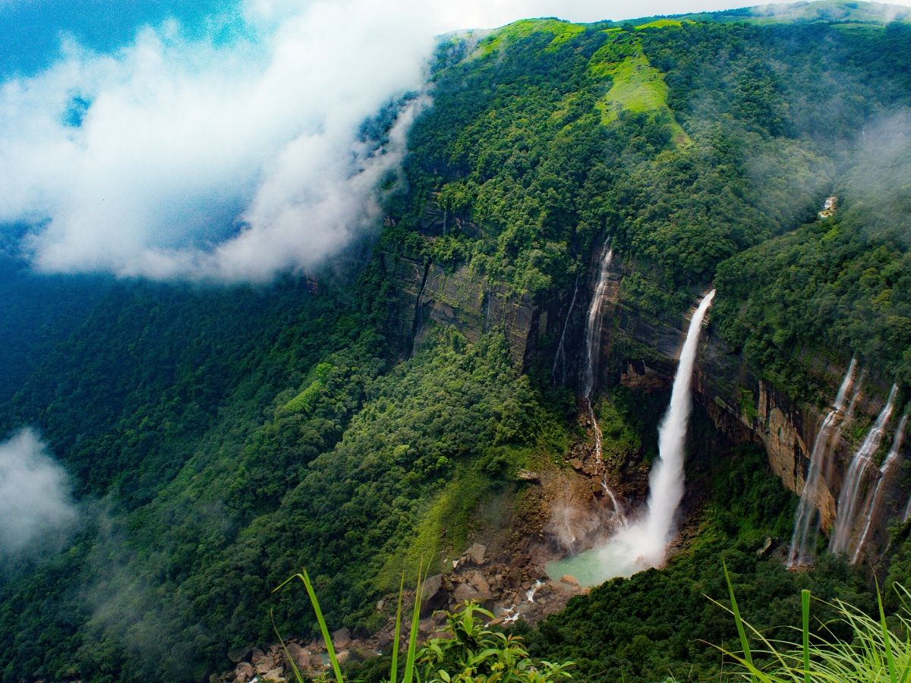
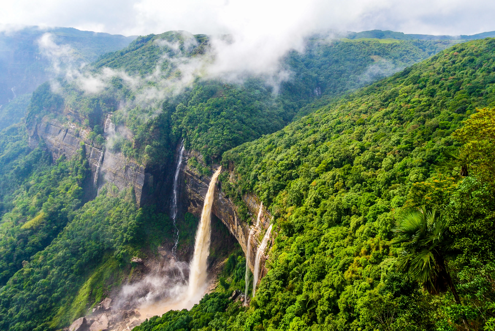
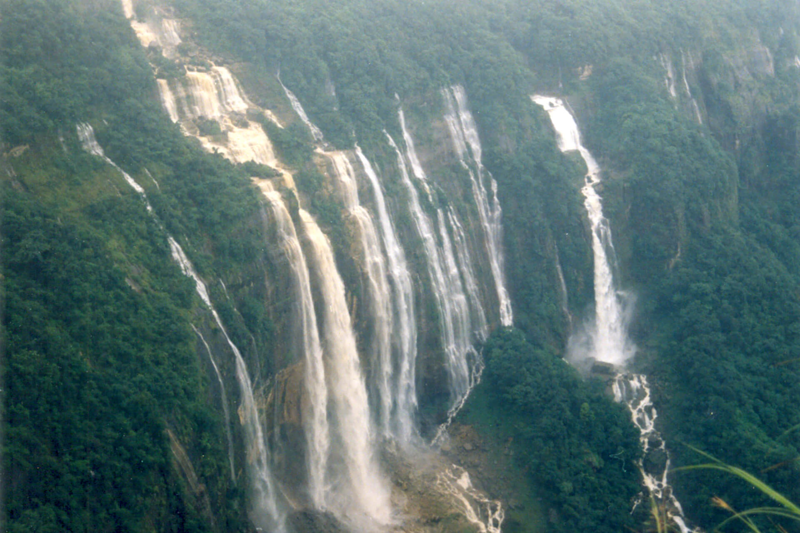
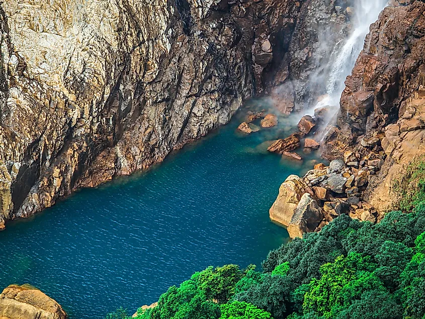
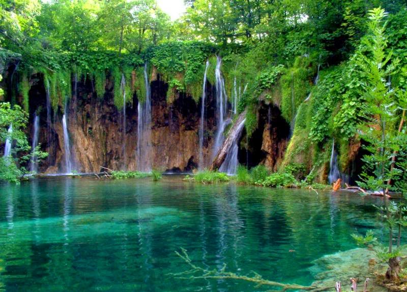
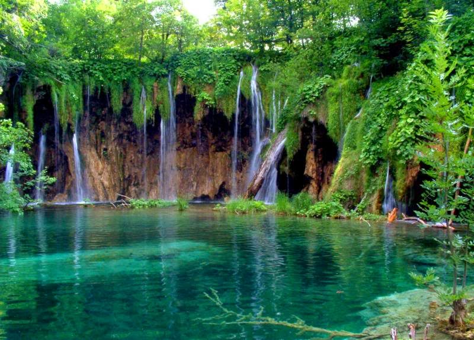

 


Nohkalikai Falls is the tallest plunge waterfall in India. Its height is 340 metres (1,115 ft). The waterfall is located in the Indian state of Meghalaya, near Cherapunji (now known as Sohra), one of the wettest places on Earth. Nohkalikai Falls are fed by the rainwater collected on the summit of a comparatively small plateau and decrease in power during the dry season, from December to February. Below the falls is a plunge pool with water of an unusual shade of green.